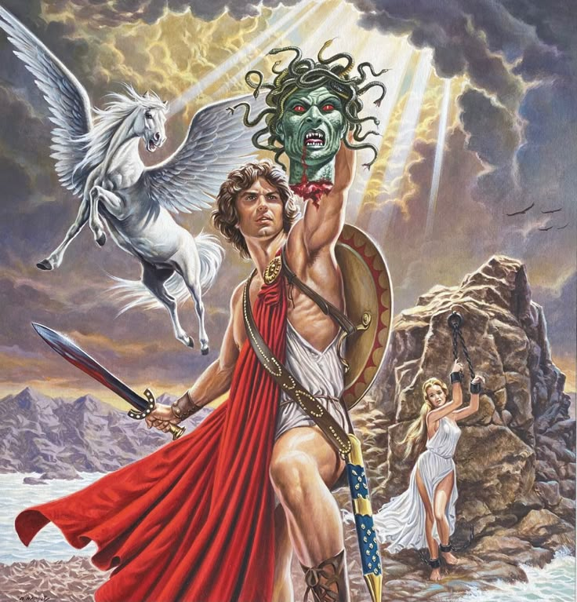

12 подвигов Геракла: Испытания величайшего героя Эллады
Геракл (греч. Ἡρακλῆς, лат. Hercules) — самый прославленный герой греческой мифологии, сын Зевса и смертной женщины Алкмены. Его жизнь стала символом борьбы со злом, преодоления судьбы и искупления вины через подвиги. По велению Дельфийского оракула Геракл должен был 12 лет служить микенскому царю Эврисфею, выполняя невыполнимые задания — так появились знаменитые двенадцать подвигов.
Двенадцать подвигов Геракла — серия заданий, данных ему царем Еврисфеем в наказание за убийство жены и детей. Первый подвиг - убийство немейского льва, затем поимка керинейской лани, победа над лернейской гидрой и стимфалийскими птицами, укрощение критского быка, поимка эриманфского вепря, очистка авгиевых конюшен, поимка коней Диомеда, добыча пояса Ипполиты, коров Гериона и, наконец, поимка Цербера и яблок Гесперид.
1. Немейский лев (Λέων της Νεμέας)
Задача: Убить чудовищного льва, неуязвимого для оружия.
Подвиг:
Геракл обнаружил, что стрелы и меч не берут шкуру льва.
Загнал зверя в пещеру и задушил голыми руками.
Снял шкуру, используя когти самого льва, и носил ее как доспех.
Символизм: Победа над страхом и грубой силой.
2. Лернейская гидра (Ύδρα της Λερναίας)
Задача: Уничтожить девятиглавую гидру, у которой на месте отрубленной головы вырастали две новые.
Подвиг:
Прижег шеи гидры горящими головнями, лишив ее регенерации.
Голову в центре, бессмертную, закопал под скалой.
Окунул стрелы в ее ядовитую желчь, сделав их смертоносными.
Особенность: Помощь племянника Иолая (прижигал раны) — потому Эврисфей не засчитал подвиг как полностью самостоятельный.
3. Керинейская лань (Ελάφη της Κερυνίας)
Задача: Поймать волшебную лань Артемиды с золотыми рогами и медными копытами.
Подвиг:
Год преследовал лань, не причиняя ей вреда.
Подстрелил ей передние ноги стрелой, не пролив крови.
Убедил Артемиду, что действует по воле богов.
Символизм: Уважение к священному и баланс силы.
4. Эриманфский вепрь (Καπροσ του Ερυμάνθου)
Задача: Живым доставить свирепого вепря, опустошавшего окрестности горы Эриманф.
Подвиг:
Загнал вепря в глубокий снег, связал и принес в Микены.
По пути посетил кентавра Фола, где случайно началась битва с кентаврами (из-за вина).
Трагедия: Случайно убил своего друга кентавра Хирона ядовитой стрелой.
5. Авгиевы конюшни (Τα στάβλια του Αυγεία)
Задача: Очистить за один день конюшни царя Авгия, где 30 лет не убирали навоз.
Подвиг:
Не стал копать — отвел реки Алфей и Пеней через конюшни.
Хитрость: Авгий обещал награду, но не отдал. Позже Геракл отомстил.
Примечание: Эврисфей не засчитал подвиг, так как Геракл получил плату (хоть и невыплаченную).
6. Стимфалийские птицы (Στυμφαλίδες Όρνιθες)
Задача: Изгнать птиц с бронзовыми перьями, пожирающих людей у озера Стимфал.
Подвиг:
Афина подарила трещотки (или тимпан), шум которых спугнул птиц.
Часть убил отравленными стрелами, остальные улетели к Черному морю.
Связь с аргонавтами: Позже эти птицы атаковали аргонавтов.
7. Критский бык (Ταύρος της Κρήτης)
Задача: Поймать бешеного быка, которого Посейдон послал на Крит (тот же бык, что породил Минотавра).
Подвиг:
Оседлал быка и переплыл на нем море до Микен.
Эврисфей выпустил быка, и тот стал терроризировать Аттику (убит Тесеем).
Ирония: Бык — дар Посейдона, которого Минос не принес в жертву, за что бог наслал безумие на животное.
8. Кони Диомеда (Ίπποι του Διομήδη)
Задача: Украсть людоедских коней фракийского царя Диомеда.
Подвиг:
Убил Диомеда и скормил его тело коням — они стали спокойными.
Привел их Эврисфею, но тот отпустил их — их съели дикие звери на горе Олимп.
Жестокость: Первый подвиг, где Геракл сознательно применил хитрость и жестокость.
9. Пояс Ипполиты (Ζώνη της Ιππολύτης)
Задача: Добыть пояс царицы амазонок для дочери Эврисфея.
Подвиг:
Ипполита согласилась отдать пояс, но Гера натравила амазонок.
В битве Геракл убил Ипполиту и забрал пояс.
Трагедия: Позже Тесей похитил сестру Ипполиты — Антиопу, что привело к войне.
10. Коровы Гериона (Τα βοοδία του Γηρυόνη)
Задача: Привести красных коров трехголового великана Гериона с далекого запада (Испания).
Подвиг:
Достиг Океана на золотой чаше Гелиоса.
Убил Гериона и его двуглавого пса Орфа.
По дороге в Италию разгромил великана Какка, укравшего коров.
Символизм: Путешествие на край света (Геракловы столпы — Гибралтар).
11. Яблоки Гесперид (Τα μήλα των Εσπερίδων)
Задача: Добыть золотые яблоки из сада Атласа.
Подвиг:
Держал небо вместо Атласа, пока тот приносил яблоки.
Хитростью вернул ношу Атласу (притворился, что хочет подложить подушку).
Афина вернула яблоки Гесперидам — они не могли принадлежать смертным.
Философия: Бремя нельзя переложить на других.
12. Укрощение Цербера (Κέρβερος)
Задача: Привести адского пса Аида живым.
Подвиг:
Прошел посвящение в Элевсинские мистерии.
Получил разрешение Аида — укротил Цербера без оружия.
Привел пса к Эврисфею, тот в ужасе велел вернуть его.
Сакральный смысл: Победа над смертью через мужество.
Значение подвигов:
Искупление: После убийства жены и детей в безумии, насланном Герой.
Путь героя: От грубой силы (лев) — к мудрости (яблоки, Цербер).
Основание культов: Геракл учредил Олимпийские игры после 5-го подвига.
Интересно: В римской традиции (Геркулес) он стал богом-покровителем императоров. Его подвиги вдохновляли искусство от античности до Ренессанса!